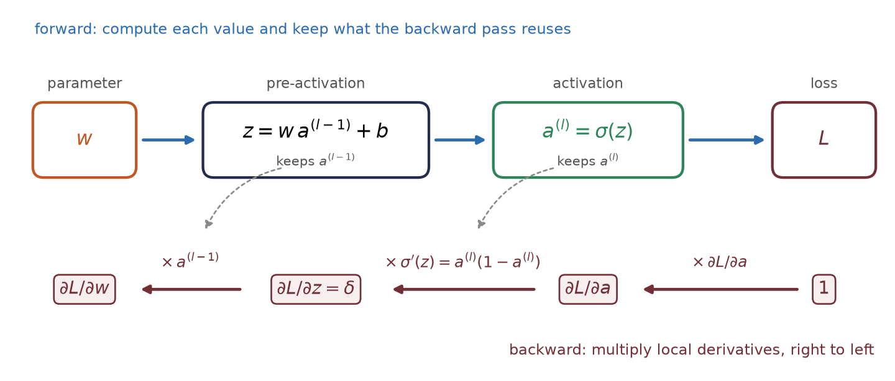
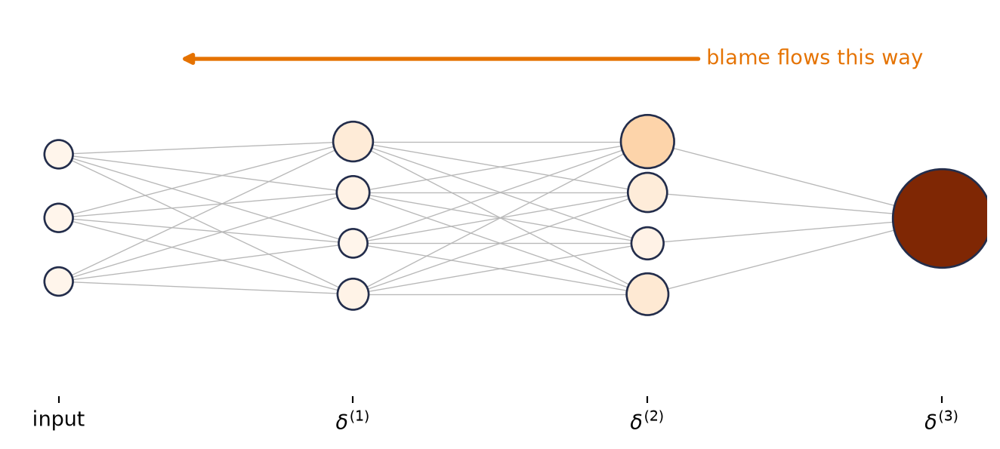
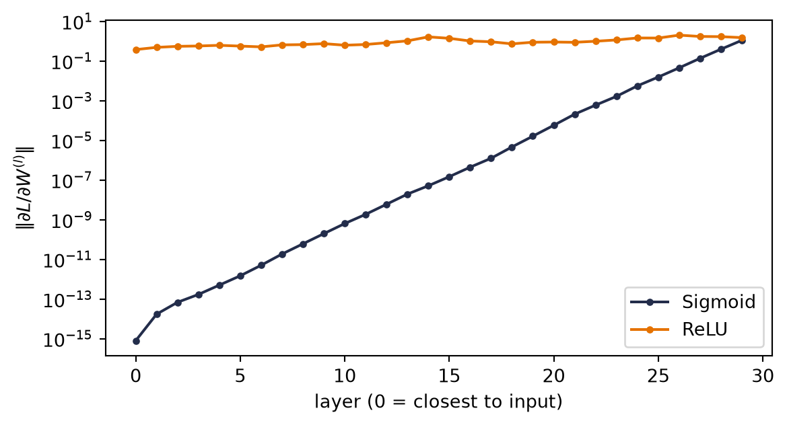
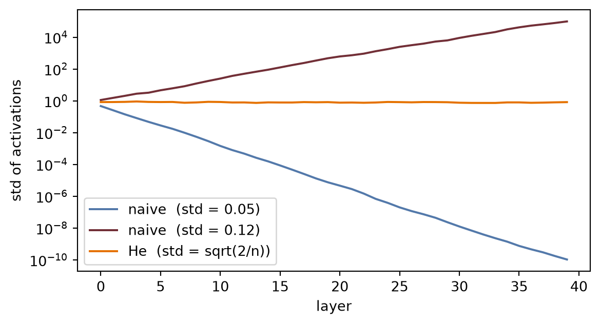

Recall the update rule that ended Chapter 1: new parameters come from old parameters by stepping against the gradient, \(\vect{w}^{(t+1)} = \vect{w}^{(t)} - \eta\,\nabla_{\vect{w}}\loss\). For linear regression we could write that gradient down by hand. But a modern network has millions, sometimes billions, of knobs, tangled through layer after layer of composed functions \(\rightarrow\) computing each partial derivative naively, one at a time, is hopeless.
Backpropagation is the algorithm that computes all of them, exactly, in one backward sweep whose cost is linear in the number of parameters. It is not a new kind of calculus. It is the chain rule, organized. By the end of this chapter you will have derived it, implemented it by hand, rebuilt it as a 60-line autograd engine, and then checked that torch.autograd agrees with you to machine precision.
5.1 One neuron, one chain
Start with the smallest possible case: one neuron on one training example. The previous activation \(a^{(l-1)}\) is multiplied by a weight \(w\), giving the pre-activation \(z = w\,a^{(l-1)} + b\); the activation function produces \(a = \sigma(z)\); and \(a\) feeds a loss \(L\).
Now turn the knob \(w\) a little. How much does \(L\) change? Follow the chain: turning \(w\) changes \(z\); the change in \(z\) changes \(a\); the change in \(a\) changes \(L\). The chain rule multiplies these local sensitivities:
import matplotlib.pyplot as pltimport matplotlib.patches as mpfig, ax = plt.subplots(figsize=(7.2, 2.4))nodes = {r"$w$": 0, r"$z = w a^{(l-1)} + b$": 1, r"$a=\sigma(z)$": 2, r"$L$": 3}for label, i in nodes.items(): ax.add_patch(mp.FancyBboxPatch((i *2.1, 0), 1.5, 0.7, boxstyle="round,pad=0.08", fc="#E8EEF7", ec="#232D4B", lw=1.4)) ax.text(i *2.1+0.75, 0.35, label, ha="center", va="center", fontsize=11)fwd =dict(arrowstyle="-|>", color="#5379AA", lw=1.8)bwd =dict(arrowstyle="-|>", color="#E57200", lw=1.8)lbl = [r"$\frac{\partial z}{\partial w}$", r"$\frac{\partial a}{\partial z}$",r"$\frac{\partial L}{\partial a}$"]for i inrange(3): ax.annotate("", xy=(2.1* (i +1) -0.1, 0.55), xytext=(2.1* i +1.6, 0.55), arrowprops=fwd) ax.annotate("", xy=(2.1* i +1.6, 0.12), xytext=(2.1* (i +1) -0.1, 0.12), arrowprops=bwd) ax.text(2.1* i +1.85, -0.28, lbl[i], ha="center", fontsize=12, color="#E57200")ax.set_xlim(-0.3, 8.3); ax.set_ylim(-0.7, 1.1); ax.axis("off")plt.tight_layout(); plt.show()

Figure 5.1: Computation as a graph: the forward pass (top, blue) computes and caches values; the backward pass (bottom, orange) multiplies local derivatives along the same edges, in reverse.
Two things about this picture generalize to any network, however deep:
The forward pass caches. Computing \(L\) produces the intermediate values (\(z\), \(a\)) along the way; we keep them, because the backward pass will need them.
The backward pass reuses. Each edge contributes one local derivative, and the derivative of \(L\) with respect to anything is the product of local derivatives along the path back to it. Nothing is recomputed \(\rightarrow\) the whole sweep costs about as much as one forward pass.
5.2 The game of blame
For a full layer of neurons the bookkeeping threatens to become a tangled mess of sums. The cure is to pick the right intermediate quantity and track only that. At the output of the network the error is obvious: it is just the gap to the target. What is not obvious is how much of that error is the fault of a weight buried ten layers deep. Backpropagation sends this blame backward, from where it is obvious to where it is not.
For squared error, \(\partial L / \partial \vect{a}^{(L)}\) is literally the prediction error \(\vect{a}^{(L)} - \vect{y}\): the error, scaled by how sensitive the activation was to its input.
Blame flows backward through the same weights the signal flowed forward through, hence the transpose; then the local gate \(\sigma'(\vect{z}^{(l)})\) scales it. This recursion runs from the last layer to the first.
Code: compute and draw the blame flow
import torchimport matplotlib.pyplot as plttorch.manual_seed(6050)sizes = [3, 4, 4, 1]Ws = [torch.randn(sizes[i +1], sizes[i]) for i inrange(3)]x = torch.randn(3) # forward pass, cachedzs, a = [], xfor W in Ws[:-1]: # hidden layers: sigmoid zs.append(W @ a) a = torch.sigmoid(zs[-1])zs.append(Ws[-1] @ a) # identity output, as in our 2-layer builddelta = [None] *3# backward pass: eqs. 1 and 2sp =lambda z: torch.sigmoid(z) * (1- torch.sigmoid(z))delta[2] = zs[2] -1.0# eq. 1 (identity output, y = 1)delta[1] = (Ws[2].T @ delta[2]) * sp(zs[1]) # eq. 2delta[0] = (Ws[1].T @ delta[1]) * sp(zs[0]) # eq. 2 againfig, ax = plt.subplots(figsize=(7, 3.2))blames = [torch.full((3,), float("nan"))] + delta # input layer: no blame neededvmax =max(d.abs().max() for d in delta)for col, (n_units, bl) inenumerate(zip(sizes, blames)): ys = torch.linspace(-1, 1, n_units +2)[1:-1] mag = bl.abs() if col >0else torch.zeros(n_units) ax.scatter([col] * n_units, ys, s=200+2200* mag / vmax, c=mag, cmap="Oranges", vmin=0, vmax=float(vmax), edgecolors="#232D4B", zorder=3)if col >0: # backward arrows prev = torch.linspace(-1, 1, sizes[col -1] +2)[1:-1]for yj in ys:for yi in prev: ax.plot([col, col -1], [yj, yi], color="#B8B8B8", lw=0.5, zorder=1)ax.annotate("blame flows this way", xy=(0.4, 1.25), xytext=(2.2, 1.25), arrowprops=dict(arrowstyle="-|>", color="#E57200", lw=2), color="#E57200", va="center")ax.set_xticks(range(4))ax.set_xticklabels(["input", r"$\delta^{(1)}$", r"$\delta^{(2)}$", r"$\delta^{(3)}$"])ax.set_yticks([]); ax.set_ylim(-1.4, 1.6)for s in ax.spines.values(): s.set_visible(False)plt.tight_layout(); plt.show()

Figure 5.2: Equations 1 and 2 in action on a real network (sizes 3–4–4–1, random weights, one example). Node size and color show each neuron’s blame \(|\delta_j|\): it starts at the output, where the error is obvious, and flows backward through \(W^\top\), shrinking wherever a sigmoid gate is nearly closed.
Equation Equation 5.4 deserves a pause, because its shapes tell the story. With \(m\) neurons in layer \(l\) and \(n\) in layer \(l-1\): \(\delta^{(l)}\) is \((m \times 1)\), and \((\vect{a}^{(l-1)})^\top\) is \((1 \times n)\). Their outer product is an \(m \times n\) matrix, exactly the shape of \(\matr{W}^{(l)}\), and entry \((i,j)\) is the blame of neuron \(i\) times the activation of neuron \(j\) that fed it. The update for a weight is blame out times signal in:
Figure 5.3: Equation 3, pictured with the blame and activations from the network above: a \((4 \times 1)\) blame column times a \((1 \times 4)\) activation row yields the full \((4 \times 4)\) gradient matrix in one stroke — entry \((i,j)\) is blame out \(\times\) signal in.
No messy summations: the matrix form performs them all at once, and it maps directly onto the parallel matrix multiplies GPUs are built for. The same four equations govern a toy network and a billion-parameter model; only the matrix sizes change.
5.3 Build it, then check it against autograd
Let us implement the four equations on a two-layer network, with no autograd anywhere, and then ask torch.autograd to differentiate the same network. If our blame algebra is right, the two answers must agree to machine precision.
Code
import torchtorch.manual_seed(6050)
<torch._C.Generator at 0x123ccf970>
Code
n, d, h =32, 5, 8# batch, input dim, hidden dimX = torch.randn(n, d)y = torch.randn(n)W1, b1 = torch.randn(h, d) *0.3, torch.zeros(h)W2, b2 = torch.randn(1, h) *0.3, torch.zeros(1)# forward pass -- cache everything the backward pass will needZ1 = X @ W1.T + b1 # (n, h)A1 = torch.sigmoid(Z1) # (n, h)Z2 = A1 @ W2.T + b2 # (n, 1)L = ((Z2.squeeze() - y) **2).mean()# backward pass -- the four equations (batch-averaged)sig_prime = A1 * (1- A1) # sigma'(z) = sigma(z)(1 - sigma(z))delta2 =2* (Z2.squeeze() - y)[:, None] / n # eq. 1 (identity output: no gate)delta1 = (delta2 @ W2) * sig_prime # eq. 2: blame through W^T, gatedgrads = { # eqs. 3 & 4: blame out x signal in"W2": delta2.T @ A1, "b2": delta2.sum(0),"W1": delta1.T @ X, "b1": delta1.sum(0),}# same network, autograd's turnparams = {k: v.clone().requires_grad_(True) for k, v in {"W1": W1, "b1": b1, "W2": W2, "b2": b2}.items()}A1_ = torch.sigmoid(X @ params["W1"].T + params["b1"])L_ = (((A1_ @ params["W2"].T + params["b2"]).squeeze() - y) **2).mean()L_.backward()for k in grads: gap = (grads[k] - params[k].grad).abs().max()print(f"{k}: max |ours - autograd| = {gap:.2e}")
W2: max |ours - autograd| = 0.00e+00
b2: max |ours - autograd| = 0.00e+00
W1: max |ours - autograd| = 3.73e-09
b1: max |ours - autograd| = 1.86e-09
Zeros, to floating-point precision. The blame equations are what autograd computes; the framework simply builds the computation graph for us as we go and then walks it backward, caching and reusing exactly as we did.
5.4 A 60-line autograd engine
To remove the last trace of magic, let us build the graph ourselves. Each Value node remembers how it was made (its parents and the local derivative rule); calling backward() walks the graph in reverse topological order, accumulating blame into every node’s grad.
Code
class Value:"""A scalar that remembers its history -- a node in the computation graph."""def__init__(self, data: float, parents=(), backward_rule=lambda: None):self.data = dataself.grad =0.0self._parents = parentsself._backward_rule = backward_ruledef__add__(self, other): other = other ifisinstance(other, Value) else Value(other) out = Value(self.data + other.data, (self, other))def rule(): # d(out)/d(self) = d(out)/d(other) = 1self.grad += out.grad other.grad += out.grad out._backward_rule = rulereturn outdef__mul__(self, other): other = other ifisinstance(other, Value) else Value(other) out = Value(self.data * other.data, (self, other))def rule(): # product rule, one side at a timeself.grad += other.data * out.grad other.grad +=self.data * out.grad out._backward_rule = rulereturn outdef sigmoid(self): s =1/ (1+2.718281828459045** (-self.data)) out = Value(s, (self,))def rule(): # sigma' = s (1 - s), the gateself.grad += s * (1- s) * out.grad out._backward_rule = rulereturn outdef backward(self): order, seen = [], set()def topo(v): # children before parentsif v notin seen: seen.add(v)for p in v._parents: topo(p) order.append(v) topo(self)self.grad =1.0# dL/dL = 1: blame starts herefor v inreversed(order): v._backward_rule()
Code
w, x, b = Value(0.7), Value(2.0), Value(-0.5)a = ((w * x) + b).sigmoid() # one neuron, forwardloss = (a + (-0.3)) * (a + (-0.3)) # squared error vs target 0.3loss.backward()# analytic check: dL/dw = 2(a - y) * sigma'(z) * xz =0.7*2.0-0.5s =1/ (1+2.718281828459045** (-z))print(f"micro-autograd: dL/dw = {w.grad:.6f}")print(f"by hand: dL/dw = {2* (s -0.3) * s * (1- s) *2.0:.6f}")
micro-autograd: dL/dw = 0.337801
by hand: dL/dw = 0.337801
Sixty lines, and it is the real thing: PyTorch’s autograd is this idea with tensors instead of scalars, a compiled graph walker, and thousands of derivative rules.
5.5torch.autograd in practice: five rules
Autograd is doing exactly what we just built by hand, and knowing that mechanics tells you why each of its rules exists. These five cover nearly every autograd bug you will meet; the live-session notebook walks through each in more depth.
Rule 1 — only leaf tensors collect gradients. A leaf is a tensor you created directly (your parameters); a non-leaf is the result of an operation (activations, losses). After backward(), only leaves have .grad populated \(\rightarrow\) intermediate blame is used and discarded, exactly as our Value engine used parents’ rules and moved on.
Rule 2 — gradients accumulate.backward()adds into .grad. Zero them before each step (optimizer.zero_grad()), or every update uses the sum of all past gradients.
Code
w = torch.randn(3, requires_grad=True) # leaf: our parametery_hat = (w *2).sum() # non-leaf: result of an operationy_hat.backward()print(f"leaf grad: {w.grad.tolist()}") # populatedprint(f"non-leaf grad: {y_hat.grad}") # None -- rule 1(w *2).sum().backward() # backward again, WITHOUT zeroingprint(f"after 2nd pass: {w.grad.tolist()}") # doubled -- rule 2
Rule 3 — parameter updates happen outside the graph. If the update w = w - lr * w.grad runs inside autograd’s view, two things go wrong: the update itself gets recorded (memory grows with every step, gradient-of-gradients), and worse, w silently becomes a non-leaf\(\rightarrow\) by rule 1 it stops receiving gradients at all. The idiom from the live session:
with torch.no_grad(): # temporarily stop recording w -= lr * w.grad # update in place; w stays a leaf
Rule 4 — in-place operations can corrupt the tape. Methods ending in _ (add_, relu_) overwrite values that the backward pass may still need from the forward cache. Inside no_grad() parameter updates they are safe; anywhere else, prefer creating a new tensor.
Rule 5 — the graph lives until you let it go. Every forward pass builds a fresh graph, freed after backward(). But any tensor you keep (say, appending loss to a list for plotting) keeps its whole graph alive with it. Store loss.item() (a plain float) or loss.detach() instead: detach() returns the same value with the history cut.
WarningThe one that silently ruins training
Rules 1 and 3 combine into the classic bug: writing self.w = self.w - lr * self.w.grad creates a new non-leafw. No error is raised; .grad simply comes back None on the next step, and the model never learns again. If a parameter’s gradient is mysteriously None, you almost certainly rebuilt it inside the graph.
5.6 The gate, and the problem with deep chains
Look again at Equation 5.3. Every backward step multiplies by \(\sigma'(\vect{z}^{(l)})\). That derivative acts as a gate on the blame: wide open, and the signal passes; nearly closed, and it dies.
Now examine the sigmoid’s gate. From \(\sigma'(z) = \sigma(z)(1-\sigma(z))\), its maximum value, at \(z = 0\), is exactly \(0.25\); away from zero the neuron saturates and the gate approaches \(0\). The sigmoid gate is at best a quarter open, and often nearly closed.
Figure 5.4: Two gates. The sigmoid’s derivative never exceeds 0.25 and vanishes under saturation; ReLU’s is fully open (exactly 1) for every active neuron.
Here is the consequence, and it is the single most important failure mode in deep learning. The chain rule multiplies gates across layers \(\rightarrow\) with sigmoid activations the backward signal shrinks by a factor of at most \(0.25\) per layer, so after \(k\) layers it is bounded by \(0.25^k\). Ten layers in, the ceiling is below one in a million. The blame reaching the early layers is too weak to update them: the vanishing gradient problem.
The fix is almost embarrassingly simple. \(\mathrm{ReLU}(z) = \max(0, z)\) has derivative \(1\) for \(z > 0\) and \(0\) otherwise (the kink at exactly zero never matters in floating point). The gate is either fully open or fully closed. For every neuron that was active in the forward pass, blame passes through unchanged: a gradient superhighway through the network. This, more than anything, is why ReLU and its variants are the default in deep networks.
Do not take the argument on faith; measure it. We build the same 30-layer network twice (sigmoid vs. ReLU), push one batch through, and record how much gradient reaches each layer:
Code: the depth experiment
from torch import nndef grad_by_layer(activation: type[nn.Module], depth: int=30, width: int=64): layers = []for _ inrange(depth): layers += [nn.Linear(width, width), activation()] net = nn.Sequential(*layers, nn.Linear(width, 1)) out = net(torch.randn(128, width)).mean() out.backward()return [lin.weight.grad.norm().item()for lin in net ifisinstance(lin, nn.Linear)][:-1]torch.manual_seed(6050)plt.figure(figsize=(6.2, 3.4))for act, color in [(nn.Sigmoid, "#232D4B"), (nn.ReLU, "#E57200")]: plt.semilogy(grad_by_layer(act), "o-", ms=3, color=color, label=act.__name__)plt.xlabel("layer (0 = closest to input)")plt.ylabel(r"$\|\partial L / \partial W^{(l)}\|$")plt.legend(); plt.tight_layout(); plt.show()

Figure 5.5: Gradient reaching each layer of a 30-layer MLP (log scale). Depth attenuates both, but the sigmoid gates compound the decay so violently that below layer 5 the gradient falls beneath floating-point precision entirely, while ReLU’s per-layer decay stays gentle enough for usable signal to reach the input.
Read the slopes: every step backward through a sigmoid layer multiplies the signal by its nearly-closed gate, and the compounding is so violent that by five layers from the input the gradient is numerically zero — those layers will never learn. ReLU is not magic (depth still attenuates the signal), but its open gates make the per-layer decay orders of magnitude gentler, and usable blame reaches all the way down. When we build deep MLPs for real in Chapter 3, this plot is the reason they train at all.
5.7 Initialization: setting the signal’s energy
One more lever lives in this chapter, because it falls out of the same variance bookkeeping. Think of the network as a pipeline and the variance of the signal as its energy. If each layer multiplies the variance by more than one, activations explode after enough layers; by less than one, they vanish, and by Equation 5.3 the gradients follow. A good initialization keeps the energy roughly constant in both directions.
The analysis is one line. For \(z = \sum_{i=1}^{n_{\text{in}}} w_i x_i\) with independent, zero-mean inputs and weights, \(\var(z) = n_{\text{in}} \var(w) \var(x)\). Keeping \(\var(z) = \var(x)\) demands
Xavier initialization splits the difference for symmetric activations like tanh and sigmoid, \(\var(w) = 2/(n_{\text{in}} + n_{\text{out}})\). He initialization accounts for ReLU discarding half its input distribution by doubling the forward recipe, \(\var(w) = 2/n_{\text{in}}\). PyTorch applies sensible defaults for you; the difference between a good and a careless choice is smooth training versus a dead or exploding network:
Code: signal energy vs depth
def signal_std(scale_fn, depth: int=40, width: int=256): x = torch.randn(512, width) stds = []for _ inrange(depth): W = scale_fn(torch.randn(width, width), width) x = torch.relu(x @ W) stds.append(x.std().item())return stdstorch.manual_seed(6050)schemes = {"naive (std = 0.05)": lambda W, n: W *0.05,"naive (std = 0.12)": lambda W, n: W *0.12,"He (std = sqrt(2/n))": lambda W, n: W * (2/ n) **0.5,}plt.figure(figsize=(6.2, 3.4))for (name, fn), color inzip(schemes.items(), ["#5379AA", "#722F37", "#E57200"]): plt.semilogy(signal_std(fn), color=color, label=name)plt.xlabel("layer"); plt.ylabel("std of activations")plt.legend(); plt.tight_layout(); plt.show()

Figure 5.6: Signal energy through 40 ReLU layers. Careless scales lose or amplify the signal exponentially; He initialization holds it steady.
Initialization gives a stable start. Keeping the signal stable during training, as the weights move, is the job of normalization layers; and for very deep networks even that is not enough, and gradients get an architectural bypass: skip connections that add a block’s input straight to its output. Both belong to later chapters (normalization with training practice in Chapter 4 and Chapter 9; the residual idea in Chapter 9, and layer normalization where it becomes essential, inside the Transformer of Chapter 14). What you should carry from here is the invariant they all serve: keep the signal, forward and backward, at constant energy.
5.8 Okay, so — the chain rule, organized
The graph. Any network is a computation graph; the forward pass computes and caches, the backward pass multiplies local derivatives in reverse.
The blame signal.\(\delta^{(l)} = \partial L / \partial \vect{z}^{(l)}\) turns the tangle into four equations: start at the output (Equation 5.2), propagate through \(\matr{W}^\top\) and the gate (Equation 5.3), then read off weight and bias gradients (Equation 5.4, Equation 5.5). Cost: one extra forward pass, for every gradient at once.
We verified it: our hand-built equations match torch.autograd to \(10^{-8}\), and a 60-line Value class reproduces the machinery end to end.
The gate rules the depth. Multiplied sigmoid gates vanish like \(0.25^k\); ReLU’s open gate is a gradient superhighway. Initialization sets the signal’s energy so neither direction explodes or dies at the start.
Backpropagation is the engine under every remaining chapter. The next time a deep model fails to learn, your first questions now have names: is the gradient reaching the early layers? what is gating it? what is its energy?
Exercises
(Pencil.) Derive the four blame equations for a network whose output layer uses the identity activation and squared-error loss (the network of our verification cell). Confirm that your \(\delta^{(2)}\) matches the delta2 line in the code.
(Pencil.) In Equation 5.3, why does the blame flow through \((\matr{W}^{(l+1)})^\top\) rather than \(\matr{W}^{(l+1)}\)? Argue from shapes: what are the dimensions of \(\delta^{(l)}\), \(\delta^{(l+1)}\), and \(\matr{W}^{(l+1)}\)?
(Code.) Extend the Value class with tanh and use it to train the one-neuron model from the check cell for 50 steps (write the update loop yourself). Verify the loss decreases.
(Code.) In the depth experiment, give the sigmoid network Xavier initialization (nn.init.xavier_normal_ on each linear layer). How much of the vanishing does good initialization recover at depth 30? What does that tell you about why both fixes, initialization and ReLU, became standard?
(Code.) Comment out optimizer.zero_grad() in any training loop from Chapter 1 and describe what happens to the loss curve. Explain it with one sentence about .grad accumulation.